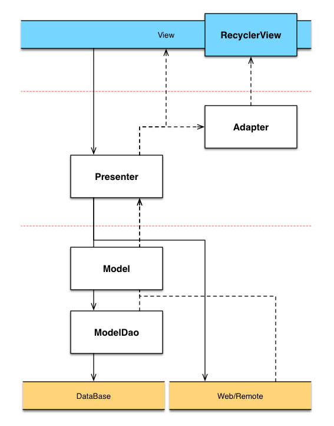
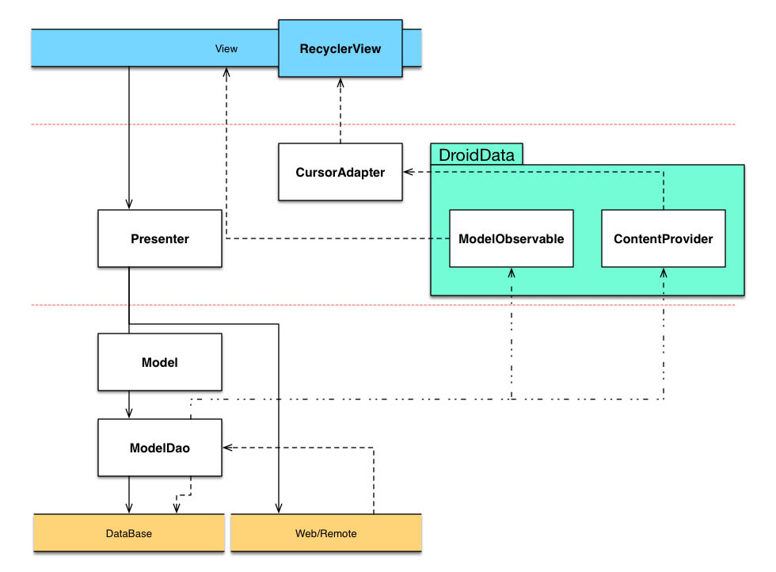

Introducing DroidData (Preliminary)
- 1. query/update data and display in view
- 2. DroidData
- 3. efficiency concern and violation of pattern
- 4. conclusion
There are already lots of discussions about the architecture of a quality android application, such as EffectiveAndroidUI, Android-CleanArchitecture, which use some common patterns like MVC, MVP or MVVM. However, what we are going to talk about in this post is not which one of these architectures is the best, but some kind solution while implementing these architectures.
query/update data and display in view
We all meet this kind of use case while using a MVP/MVVM pattern as the diagram shows:

Viewrequests/updates data toPresenter/ViewModelPresenter/ViewModelrequests/updates data toModelDao(theBusiness Logic)ModelDaoretrieves data(in the form ofModel) fromDatabase/Web/Remoteand returns toPresenter
orModelDaoupdates data toDatabase/Web/Remoteand returns result toPresenterPresenterupdatesViewwith retrieved data or the result- if we use a RecyclerView,
Presenterwill need updateAdapterto update RecyclerView
As we can see, Presenter part acts as two roles: manipulates data with ModelDao and displays data to View.
Coding often becomes trivial when we implementing the displaying part and complicated when we updating different views with the same data source.
Taking an Excel app for example, displaying all the records requires code like EditText.setText() to bind data with a RecyclerView. Also modifying record requires code to find that specific record in RecyclerView or the corresponding record in detail view, and update them.
(Show a diagram here)
We can skip EditText.setText() part by taking the advantage of Google’s Data Binding library.
But what if we go further and more aggressive and directly bind Database with view through some way, then all the Presenter has to do is updating the Database. Presenter doesn’t need to care when the record is changed or which one of record is changed.
That is where the DroidData based on.
DroidData
DroidData uses Data Binding(bind data to view), ContentProvider(a native android library providing mechanisms to query data and notify data changes), GreenDao(a light & fast ORM solution for manipulating data in SQLite Databases) to accomplish above goal.

Viewrequests/updates data toPresenter/ViewModelPresenter/ViewModelrequests/updates data toModelDao(theBusiness Logic)ModelDaodetermines if need retrieve data fromWeb/Remoteand saves data toDatabase;ModelDaoupdates data toDatabaseor updates data toWeb/Remotethen saves result toDatabaseModelDaoasynchronously notifiesModelObservable/ContentProviderthat data source has changedModelObservable/ContentProvidernotifiesView/RecyclerView, andView/RecyclerViewgets refreshed with new data
The step4 and step5 are auto triggered with the generated code by DroidData. This will make our code more
efficiency concern and violation of pattern
All the notifications are triggered by the native ContentProvider.Also, DroidData provides a DDCursorRecyclerAdapter to bind database with view by Cursor, and ModelObservable map is stored with WeakReference.
It seems that DroidData violated the MV* pattern to some extent, because we connect View and Model directly. From another point of view, we actually connect View with ContentProvider which can also be considered as Presenter. Furthermore, DroidData makes test more straightforward. We can test the Presenter without the View.